By Richard (@P7RIM3) · October 14, 2026 (ET) · follow-up to yesterday's REA 6.4.0 hands-on
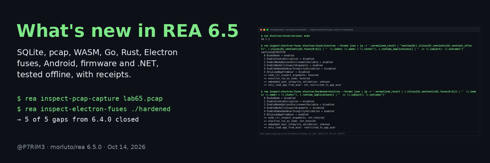
About the receipts. REA 6.5.0 (release page) was published Wed Oct 14, 2026, 8:32 AM ET. Everything below ran on my Grok Bot box (Debian 13, x64, Node 24.21.0, Ghidra 12.1.4, JDK 21) between about 12:30 and 3:30 PM ET, against the npm package rea-agents 6.5.0 and a clone of morluto/rea at
75104040d(rea-agents-6.5.0-25-g75104040d). Every terminal image is real output, and the same text is in a code block under it so you can copy it. Every target is something I built myself, or (for Android) an Apache-2.0 sample app that REA's own tests pin. Nothing here was tested on Windows or macOS. Where I only read the docs, I say so.
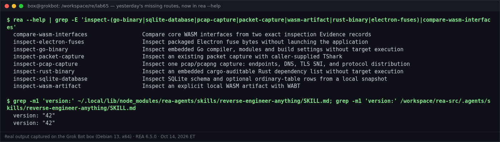
Yesterday's article flagged that npm 6.4.0 lacked routes the main branch already documented: packet capture (fields), pcap summaries, Go, WASM and SQLite. The skill on main was version 41 while npm shipped 37. Today both are version 42, and every one of those routes runs:
| Gap in 6.4.0 | 6.5.0 command / MCP tool | Tested today? | Section |
|---|---|---|---|
| Packet capture (fields) | inspect-packet-capture / inspect_packet_capture |
✅ TShark 4.4.19 | §8 |
| pcap summaries (DNS / SNI / endpoints) | inspect-pcap-capture / inspect_pcap_capture |
✅ | §8 |
| Go build metadata | inspect-go-binary / inspect_go_binary |
✅ go1.24.4 | §10 |
| WASM | inspect-wasm-artifact, compare-wasm-interfaces |
✅ WABT 1.0.42 | §9 |
| SQLite | inspect-sqlite-database / inspect_sqlite_database |
✅ SQLite 3.53.4 | §7 |
The release also adds Rust dependency metadata and Electron fuses (both tested, §11–12), plus cross-bundle JavaScript and paged summaries (§4–6). I also installed JADX, adb, Apktool, Binwalk, Unblob and the .NET SDK and ran the three routes I couldn't test yesterday: Android, firmware and .NET (§13).
$ rea --help | grep -E 'inspect-(go-binary|sqlite-database|pcap-capture|packet-capture|wasm-artifact|rust-binary|electron-fuses)|compare-wasm-interfaces'
compare-wasm-interfaces Compare core WASM interfaces from two exact inspection Evidence records
inspect-electron-fuses Inspect packaged Electron fuse bytes without launching the application
inspect-go-binary Inspect embedded Go compiler, modules and build settings without target execution
inspect-packet-capture Inspect an existing packet capture with caller-supplied TShark
inspect-pcap-capture Inspect one pcap/pcapng capture: endpoints, DNS, TLS SNI, and protocol distribution
inspect-rust-binary Inspect an embedded cargo-auditable Rust dependency list without target execution
inspect-sqlite-database Inspect SQLite schema and optional ordinary-table rows from a local snapshot
inspect-wasm-artifact Inspect an explicit local WASM artifact with WABT
$ grep -m1 'version:' ~/.local/lib/node_modules/rea-agents/skills/reverse-engineer-anything/SKILL.md; grep -m1 'version:' /workspace/rea-src/.agents/skills/reverse-engineer-anything/SKILL.md
version: "42"
version: "42"
Someone sent me https://t.co/8VhocJiXYK with "make sure we are up to date". It's a plain 301 to the 6.5.0 release page, the same tool and version, so there was nothing else to install:
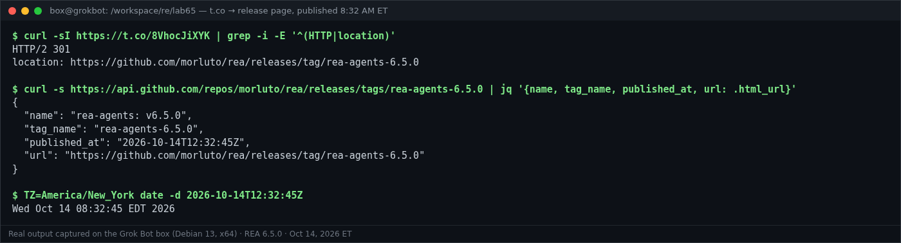
$ curl -sI https://t.co/8VhocJiXYK | grep -i -E '^(HTTP|location)'
HTTP/2 301
location: https://github.com/morluto/rea/releases/tag/rea-agents-6.5.0
$ curl -s https://api.github.com/repos/morluto/rea/releases/tags/rea-agents-6.5.0 | jq '{name, tag_name, published_at, url: .html_url}'
{
"name": "rea-agents: v6.5.0",
"tag_name": "rea-agents-6.5.0",
"published_at": "2026-10-14T12:32:45Z",
"url": "https://github.com/morluto/rea/releases/tag/rea-agents-6.5.0"
}
$ TZ=America/New_York date -d 2026-10-14T12:32:45Z
Wed Oct 14 08:32:45 EDT 2026
Then the update itself. npm 11.19 asks before running install scripts, so you'll see a frida warning. That only matters if you use REA's optional Frida tools (docs):
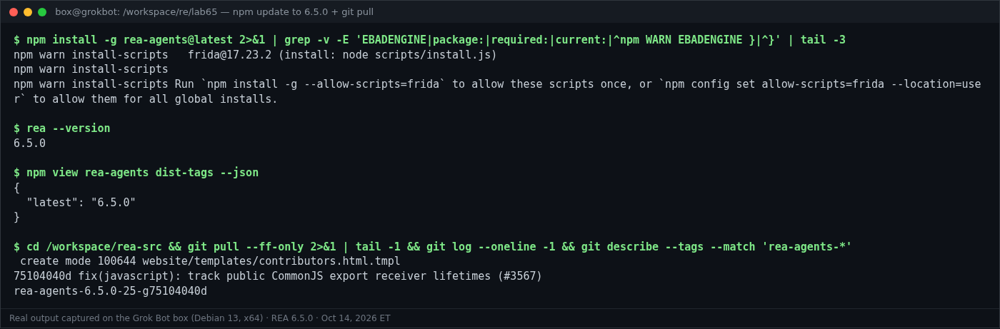
$ npm install -g rea-agents@latest 2>&1 | grep -v -E 'EBADENGINE|package:|required:|current:|^npm WARN EBADENGINE }|^}' | tail -3
npm warn install-scripts frida@17.23.2 (install: node scripts/install.js)
npm warn install-scripts
npm warn install-scripts Run `npm install -g --allow-scripts=frida` to allow these scripts once, or `npm config set allow-scripts=frida --location=user` to allow them for all global installs.
$ rea --version
6.5.0
$ npm view rea-agents dist-tags --json
{
"latest": "6.5.0"
}
$ cd /workspace/rea-src && git pull --ff-only 2>&1 | tail -1 && git log --oneline -1 && git describe --tags --match 'rea-agents-*'
create mode 100644 website/templates/contributors.html.tmpl
75104040d fix(javascript): track public CommonJS export receiver lifetimes (#3567)
rea-agents-6.5.0-25-g75104040d
main was already 25 commits past the tag by mid-afternoon. Everything in this article uses the npm 6.5.0 build, not main.
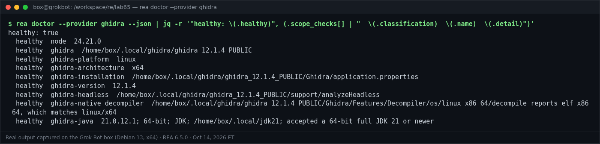
$ rea doctor --provider ghidra --json | jq -r '"healthy: \(.healthy)", (.scope_checks[] | " \(.classification) \(.name) \(.detail)")'
healthy: true
healthy node 24.21.0
healthy ghidra /home/box/.local/ghidra/ghidra_12.1.4_PUBLIC
healthy ghidra-platform linux
healthy ghidra-architecture x64
healthy ghidra-installation /home/box/.local/ghidra/ghidra_12.1.4_PUBLIC/Ghidra/application.properties
healthy ghidra-version 12.1.4
healthy ghidra-headless /home/box/.local/ghidra/ghidra_12.1.4_PUBLIC/support/analyzeHeadless
healthy ghidra-native_decompiler /home/box/.local/ghidra/ghidra_12.1.4_PUBLIC/Ghidra/Features/Decompiler/os/linux_x86_64/decompile reports elf x86_64, which matches linux/x64
healthy ghidra-java 21.0.12.1; 64-bit; JDK; /home/box/.local/jdk21; accepted a 64-bit full JDK 21 or newer
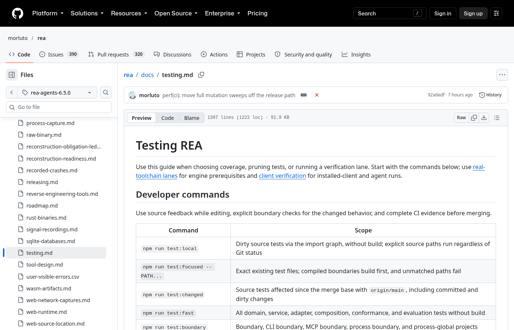
REA is for software you own or are authorized to analyze (DISCLAIMER). So I built every target myself in /workspace/re/lab65:
| Target | What it is |
|---|---|
js/dist/ |
4-file esbuild app: index.js → shared chunk, plus two dynamic-import chunks (checkout, settings) |
js/wp-dist/ |
The same source built with webpack 5.111.1 into 5 files (runtime + split chunks) |
sqlite/notes.db |
Read-only 20 KB database: 2 tables, 2 indexes, a view and a trigger, with a max-int64 and a BLOB |
pcap/lab65.pcap |
14 packets made with scapy using RFC 5737 documentation addresses only: DNS, HTTP, a TLS ClientHello with SNI, one UDP datagram |
wasm/calc-v1.wasm, calc-v2.wasm |
Hand-written WAT, assembled with WABT; v2 adds an import and an export |
go/hellogo |
go build -trimpath of a hello world that uses rsc.io/quote |
rust/hellorust-* |
The same crate (dep: itoa) built with and without cargo auditable |
electron/stock, electron/hardened |
Electron 44.7.2 Linux binary, once stock, once with fuses flipped by @electron/fuses 2.1.3 |
android/ApiDemos-debug.apk |
Appium ApiDemos 6.0.18 (Apache-2.0), the exact APK REA's own tests pin (SHA-256 matches) |
firmware/lab65-fw.bin |
My own 188 KB image: 512-byte custom header + xz squashfs rootfs + gzip'd config |
dotnet/target/PromoLab.dll |
A tiny .NET 8 class library + console app I wrote (one P/Invoke) |
The WASM sources, so you can see exactly what REA should find:
(module $calc
(import "env" "log_i32" (func $log (param i32)))
(memory (export "memory") 1)
(func $add (export "add") (param i32 i32) (result i32)
local.get 0 local.get 1 i32.add)
(func (export "checksum") (param $ptr i32) (param $len i32) (result i32) ...)
)
;; calc-v2.wat adds:
;; (import "env" "now_ms" (func $now (result f64)))
;; (func (export "mul") (param i32 i32) (result i32) local.get 0 local.get 1 i32.mul)
Env vars for the bring-your-own engines (all documented per route):
export REA_WABT_BIN_DIRECTORY=$HOME/.local/wabt/wabt-1.0.42/bin
export REA_WAKARU_COMMAND=$HOME/.local/wakaru/wakaru
export REA_TSHARK_COMMAND=/usr/bin/tshark # must be absolute for inspect-packet-capture
export REA_JADX_MCP_JAR=$HOME/.local/android/jadx-headless-mcp-0.7.1-all.jar
export REA_ADB_PATH=$HOME/.local/android/platform-tools/adb
export REA_APKTOOL_COMMAND=$HOME/.local/apktool/apktool
export REA_BINWALK_COMMAND=$HOME/.cargo/bin/binwalk
export REA_UNBLOB_COMMAND=$HOME/.local/unblob-venv/bin/unblob
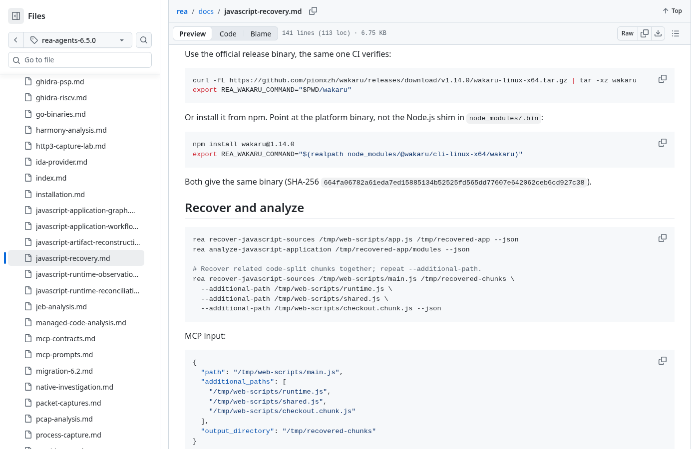
New in 6.5: --source-path (MCP: source_paths) analyzes exactly the files you name without pulling their imports into scope. Unselected files keep their identity and get explicit unknown coverage, not silence (changelog).
I picked index.js and the checkout chunk out of four files:
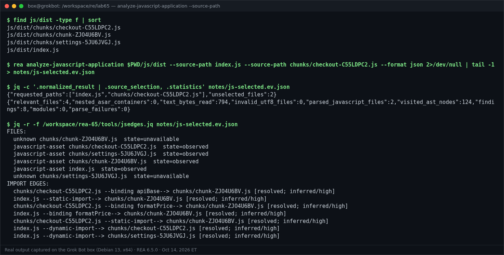
$ find js/dist -type f | sort
js/dist/chunks/checkout-C55LDPC2.js
js/dist/chunks/chunk-ZJO4U6BV.js
js/dist/chunks/settings-5JU6JVGJ.js
js/dist/index.js
$ rea analyze-javascript-application $PWD/js/dist --source-path index.js --source-path chunks/checkout-C55LDPC2.js --format json 2>/dev/null | tail -1 > notes/js-selected.ev.json
$ jq -c '.normalized_result | .source_selection, .statistics' notes/js-selected.ev.json
{"requested_paths":["index.js","chunks/checkout-C55LDPC2.js"],"unselected_files":2}
{"relevant_files":4,"nested_asar_containers":0,"text_bytes_read":794,"invalid_utf8_files":0,"parsed_javascript_files":2,"visited_ast_nodes":124,"findings":8,"modules":0,"parse_failures":0}
$ jq -r -f /workspace/rea-65/tools/jsedges.jq notes/js-selected.ev.json
FILES:
unknown chunks/chunk-ZJO4U6BV.js state=unavailable
javascript-asset chunks/checkout-C55LDPC2.js state=observed
javascript-asset chunks/settings-5JU6JVGJ.js state=observed
javascript-asset chunks/chunk-ZJO4U6BV.js state=observed
javascript-asset index.js state=observed
unknown chunks/settings-5JU6JVGJ.js state=unavailable
IMPORT EDGES:
chunks/checkout-C55LDPC2.js --binding apiBase--> chunks/chunk-ZJO4U6BV.js [resolved; inferred/high]
index.js --static-import--> chunks/chunk-ZJO4U6BV.js [resolved; inferred/high]
chunks/checkout-C55LDPC2.js --binding formatPrice--> chunks/chunk-ZJO4U6BV.js [resolved; inferred/high]
index.js --binding formatPrice--> chunks/chunk-ZJO4U6BV.js [resolved; inferred/high]
chunks/checkout-C55LDPC2.js --static-import--> chunks/chunk-ZJO4U6BV.js [resolved; inferred/high]
index.js --dynamic-import--> chunks/checkout-C55LDPC2.js [resolved; inferred/high]
index.js --dynamic-import--> chunks/settings-5JU6JVGJ.js [resolved; inferred/high]
What to notice:
parsed_javascript_files: 2). The shared chunk and settings chunk show up twice: once as an observed asset (it exists, with its hash), once as unknown … state=unavailable with the limitation "Source is outside the caller-selected source_paths; it was inventoried but not analyzed."apiBase, formatPrice) are recorded, at inferred/high.Run it again without --source-path and coverage goes from partial to complete:
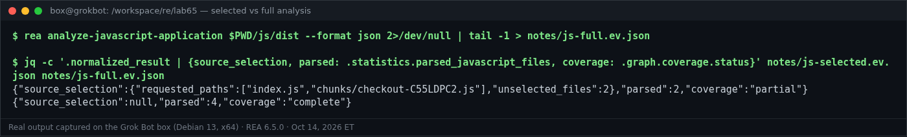
$ rea analyze-javascript-application $PWD/js/dist --format json 2>/dev/null | tail -1 > notes/js-full.ev.json
$ jq -c '.normalized_result | {source_selection, parsed: .statistics.parsed_javascript_files, coverage: .graph.coverage.status}' notes/js-selected.ev.json notes/js-full.ev.json
{"source_selection":{"requested_paths":["index.js","chunks/checkout-C55LDPC2.js"],"unselected_files":2},"parsed":2,"coverage":"partial"}
{"source_selection":null,"parsed":4,"coverage":"complete"}
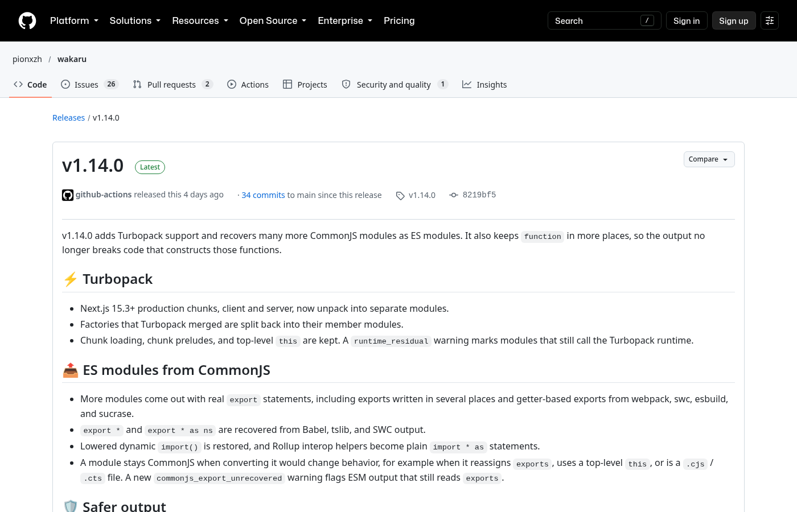
recover-javascript-sources now takes multiple inputs (--additional-path) and keeps cross-chunk imports, using caller-supplied Wakaru 1.14.0. With one chunk, you get webpack's mangled import. With all five, Wakaru links it to the recovered src/shared.js:
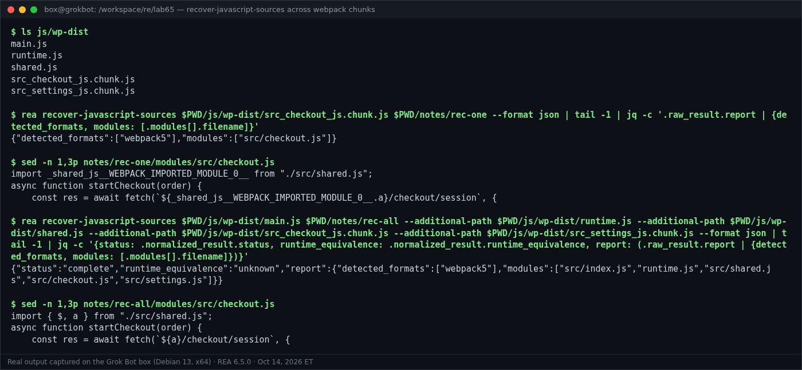
$ ls js/wp-dist
main.js
runtime.js
shared.js
src_checkout_js.chunk.js
src_settings_js.chunk.js
$ rea recover-javascript-sources $PWD/js/wp-dist/src_checkout_js.chunk.js $PWD/notes/rec-one --format json | tail -1 | jq -c '.raw_result.report | {detected_formats, modules: [.modules[].filename]}'
{"detected_formats":["webpack5"],"modules":["src/checkout.js"]}
$ sed -n 1,3p notes/rec-one/modules/src/checkout.js
import _shared_js__WEBPACK_IMPORTED_MODULE_0__ from "./src/shared.js";
async function startCheckout(order) {
const res = await fetch(`${_shared_js__WEBPACK_IMPORTED_MODULE_0__.a}/checkout/session`, {
$ rea recover-javascript-sources $PWD/js/wp-dist/main.js $PWD/notes/rec-all --additional-path $PWD/js/wp-dist/runtime.js --additional-path $PWD/js/wp-dist/shared.js --additional-path $PWD/js/wp-dist/src_checkout_js.chunk.js --additional-path $PWD/js/wp-dist/src_settings_js.chunk.js --format json | tail -1 | jq -c '{status: .normalized_result.status, runtime_equivalence: .normalized_result.runtime_equivalence, report: (.raw_result.report | {detected_formats, modules: [.modules[].filename]})}'
{"status":"complete","runtime_equivalence":"unknown","report":{"detected_formats":["webpack5"],"modules":["src/index.js","runtime.js","src/shared.js","src/checkout.js","src/settings.js"]}}
$ sed -n 1,3p notes/rec-all/modules/src/checkout.js
import { $, a } from "./src/shared.js";
async function startCheckout(order) {
const res = await fetch(`${a}/checkout/session`, {
Receipt: runtime_equivalence: "unknown". REA doesn't claim the recovered code behaves the same, and the original names (API_BASE, formatPrice) are not recovered. You get $ and a back, because that's what the minified bundle contains.
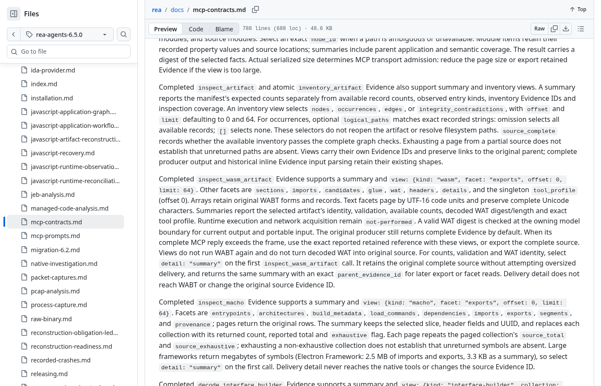
This is the change agents will feel most. Pass detail: "summary", get a small result, then page the retained Evidence with inspect_analysis_view without re-running the analysis (mcp-contracts.md). I drove the MCP server directly over stdio with a 28-line JSON-RPC client:
{"name":"inspect_wasm_artifact","arguments":{"path":".../calc-v1.wasm","detail":"summary"}}
{"name":"inspect_analysis_view","arguments":{
"source":{"kind":"retained-evidence","evidence_id":"$R4.evidence_id"},
"view":{"kind":"wasm","facet":"exports","offset":0,"limit":2}}}
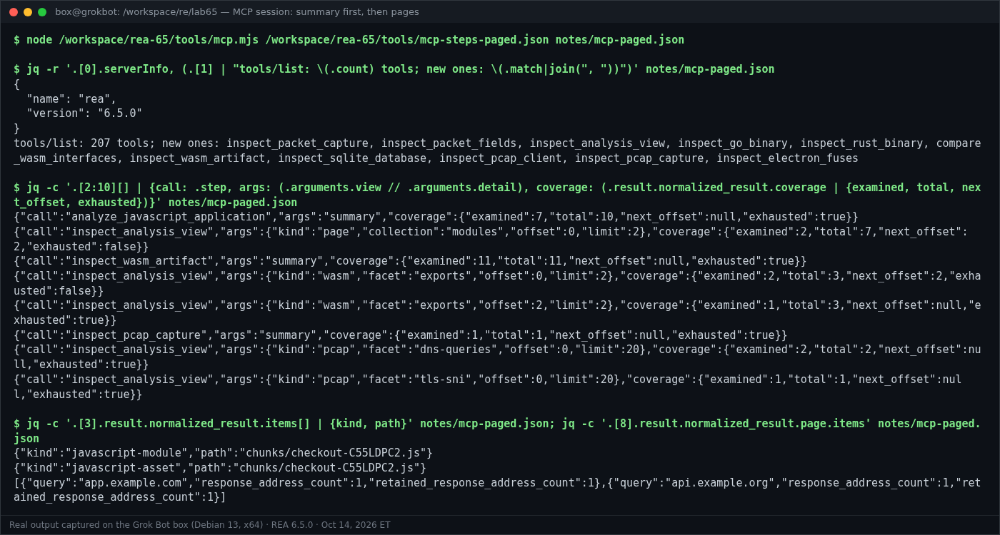
$ node /workspace/rea-65/tools/mcp.mjs /workspace/rea-65/tools/mcp-steps-paged.json notes/mcp-paged.json
$ jq -r '.[0].serverInfo, (.[1] | "tools/list: \(.count) tools; new ones: \(.match|join(", "))")' notes/mcp-paged.json
{
"name": "rea",
"version": "6.5.0"
}
tools/list: 207 tools; new ones: inspect_packet_capture, inspect_packet_fields, inspect_analysis_view, inspect_go_binary, inspect_rust_binary, compare_wasm_interfaces, inspect_wasm_artifact, inspect_sqlite_database, inspect_pcap_client, inspect_pcap_capture, inspect_electron_fuses
$ jq -c '.[2:10][] | {call: .step, args: (.arguments.view // .arguments.detail), coverage: (.result.normalized_result.coverage | {examined, total, next_offset, exhausted})}' notes/mcp-paged.json
{"call":"analyze_javascript_application","args":"summary","coverage":{"examined":7,"total":10,"next_offset":null,"exhausted":true}}
{"call":"inspect_analysis_view","args":{"kind":"page","collection":"modules","offset":0,"limit":2},"coverage":{"examined":2,"total":7,"next_offset":2,"exhausted":false}}
{"call":"inspect_wasm_artifact","args":"summary","coverage":{"examined":11,"total":11,"next_offset":null,"exhausted":true}}
{"call":"inspect_analysis_view","args":{"kind":"wasm","facet":"exports","offset":0,"limit":2},"coverage":{"examined":2,"total":3,"next_offset":2,"exhausted":false}}
{"call":"inspect_analysis_view","args":{"kind":"wasm","facet":"exports","offset":2,"limit":2},"coverage":{"examined":1,"total":3,"next_offset":null,"exhausted":true}}
{"call":"inspect_pcap_capture","args":"summary","coverage":{"examined":1,"total":1,"next_offset":null,"exhausted":true}}
{"call":"inspect_analysis_view","args":{"kind":"pcap","facet":"dns-queries","offset":0,"limit":20},"coverage":{"examined":2,"total":2,"next_offset":null,"exhausted":true}}
{"call":"inspect_analysis_view","args":{"kind":"pcap","facet":"tls-sni","offset":0,"limit":20},"coverage":{"examined":1,"total":1,"next_offset":null,"exhausted":true}}
$ jq -c '.[3].result.normalized_result.items[] | {kind, path}' notes/mcp-paged.json; jq -c '.[8].result.normalized_result.page.items' notes/mcp-paged.json
{"kind":"javascript-module","path":"chunks/checkout-C55LDPC2.js"}
{"kind":"javascript-asset","path":"chunks/checkout-C55LDPC2.js"}
[{"query":"app.example.com","response_address_count":1,"retained_response_address_count":1},{"query":"api.example.org","response_address_count":1,"retained_response_address_count":1}]
The paging contract is simple and honest: examined, total, next_offset, exhausted. WASM exports came back 2 of 3 (next_offset: 2), then 1 of 3 (exhausted: true).
The CLI has no retained store between processes, so you pass the saved Evidence inline. On my 4-file app, the full Evidence was 266,827 bytes and the summary view 9,827 bytes, about 27× smaller (the CLI guide's example is a 334 MB Obsidian Evidence file → ~10 KB):
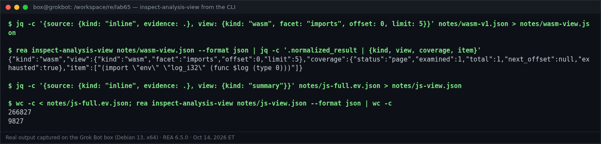
$ jq -c '{source: {kind: "inline", evidence: .}, view: {kind: "wasm", facet: "imports", offset: 0, limit: 5}}' notes/wasm-v1.json > notes/wasm-view.json
$ rea inspect-analysis-view notes/wasm-view.json --format json | jq -c '.normalized_result | {kind, view, coverage, item}'
{"kind":"wasm","view":{"kind":"wasm","facet":"imports","offset":0,"limit":5},"coverage":{"status":"page","examined":1,"total":1,"next_offset":null,"exhausted":true},"item":["(import \"env\" \"log_i32\" (func $log (type 0)))"]}
$ jq -c '{source: {kind: "inline", evidence: .}, view: {kind: "summary"}}' notes/js-full.ev.json > notes/js-view.json
$ wc -c < notes/js-full.ev.json; rea inspect-analysis-view notes/js-view.json --format json | wc -c
266827
9827
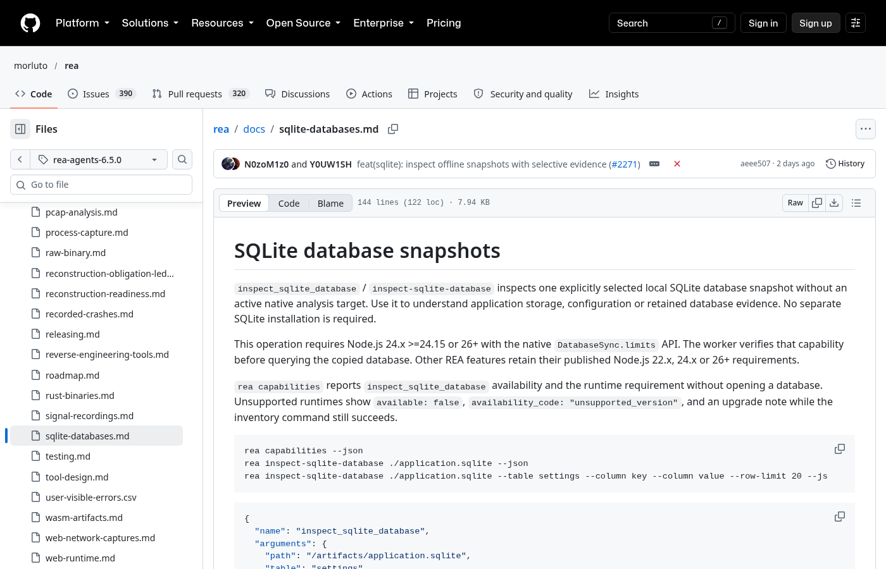
inspect-sqlite-database reads a local snapshot (and an existing sibling WAL) without modifying it. It needs Node 24 ≥ 24.15 or Node 26+ (it uses DatabaseSync.limits; see §15 for what Node 20 does). My database file is mode -r--r--r--, and REA was fine with that:
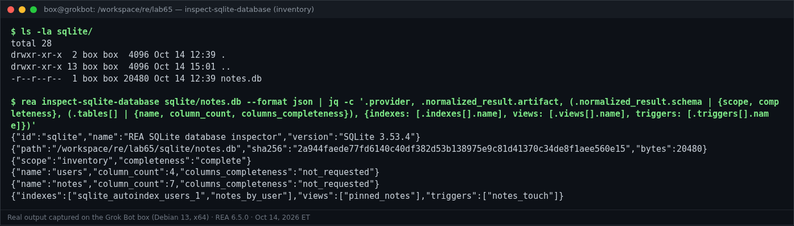
$ ls -la sqlite/
total 28
drwxr-xr-x 2 box box 4096 Oct 14 12:39 .
drwxr-xr-x 13 box box 4096 Oct 14 15:01 ..
-r--r--r-- 1 box box 20480 Oct 14 12:39 notes.db
$ rea inspect-sqlite-database sqlite/notes.db --format json | jq -c '.provider, .normalized_result.artifact, (.normalized_result.schema | {scope, completeness}, (.tables[] | {name, column_count, columns_completeness}), {indexes: [.indexes[].name], views: [.views[].name], triggers: [.triggers[].name]})'
{"id":"sqlite","name":"REA SQLite database inspector","version":"SQLite 3.53.4"}
{"path":"/workspace/re/lab65/sqlite/notes.db","sha256":"2a944faede77fd6140c40df382d53b138975e9c81d41370c34de8f1aee560e15","bytes":20480}
{"scope":"inventory","completeness":"complete"}
{"name":"users","column_count":4,"columns_completeness":"not_requested"}
{"name":"notes","column_count":7,"columns_completeness":"not_requested"}
{"indexes":["sqlite_autoindex_users_1","notes_by_user"],"views":["pinned_notes"],"triggers":["notes_touch"]}
Rows are opt-in, per table and column, and typed carefully. Text keeps its raw bytes, the int64 max comes back as a string (no JavaScript precision loss), BLOBs are hex, and order: "unspecified" tells you not to read meaning into row order:
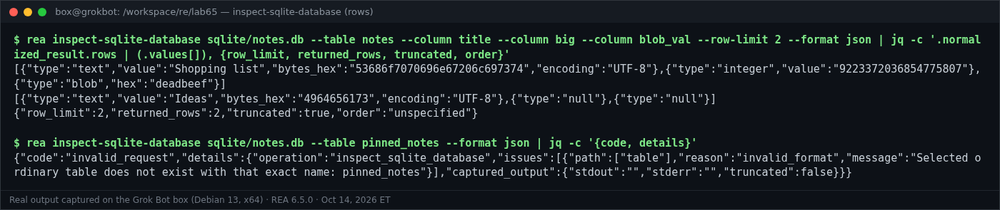
$ rea inspect-sqlite-database sqlite/notes.db --table notes --column title --column big --column blob_val --row-limit 2 --format json | jq -c '.normalized_result.rows | (.values[]), {row_limit, returned_rows, truncated, order}'
[{"type":"text","value":"Shopping list","bytes_hex":"53686f7070696e67206c697374","encoding":"UTF-8"},{"type":"integer","value":"9223372036854775807"},{"type":"blob","hex":"deadbeef"}]
[{"type":"text","value":"Ideas","bytes_hex":"4964656173","encoding":"UTF-8"},{"type":"null"},{"type":"null"}]
{"row_limit":2,"returned_rows":2,"truncated":true,"order":"unspecified"}
$ rea inspect-sqlite-database sqlite/notes.db --table pinned_notes --format json | jq -c '{code, details}'
{"code":"invalid_request","details":{"operation":"inspect_sqlite_database","issues":[{"path":["table"],"reason":"invalid_format","message":"Selected ordinary table does not exist with that exact name: pinned_notes"}],"captured_output":{"stdout":"","stderr":"","truncated":false}}}
Asking for rows from the view pinned_notes is refused: rows come from ordinary tables only.
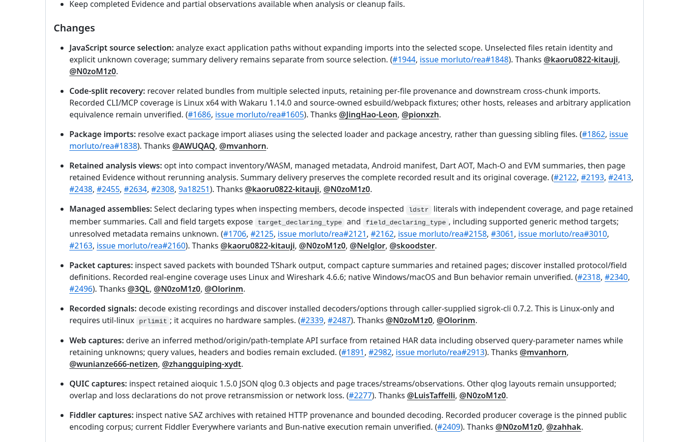
Two tools. inspect-pcap-capture gives the overview (endpoints, DNS, TLS SNI, HTTP URIs, protocol stacks). inspect-packet-capture gives exact TShark fields with a display filter and paging (pcap-analysis.md). Both read a saved file. Neither captures live traffic.
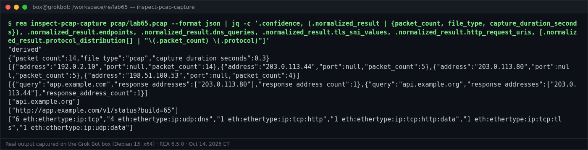
$ rea inspect-pcap-capture pcap/lab65.pcap --format json | jq -c '.confidence, (.normalized_result | {packet_count, file_type, capture_duration_seconds}), .normalized_result.endpoints, .normalized_result.dns_queries, .normalized_result.tls_sni_values, .normalized_result.http_request_uris, [.normalized_result.protocol_distribution[] | "\(.packet_count) \(.protocol)"]'
"derived"
{"packet_count":14,"file_type":"pcap","capture_duration_seconds":0.3}
[{"address":"192.0.2.10","port":null,"packet_count":14},{"address":"203.0.113.44","port":null,"packet_count":5},{"address":"203.0.113.80","port":null,"packet_count":5},{"address":"198.51.100.53","port":null,"packet_count":4}]
[{"query":"app.example.com","response_addresses":["203.0.113.80"],"response_address_count":1},{"query":"api.example.org","response_addresses":["203.0.113.44"],"response_address_count":1}]
["api.example.org"]
["http://app.example.com/v1/status?build=65"]
["6 eth:ethertype:ip:tcp","4 eth:ethertype:ip:udp:dns","1 eth:ethertype:ip:tcp:http","1 eth:ethertype:ip:tcp:http:data","1 eth:ethertype:ip:tcp:tls","1 eth:ethertype:ip:udp:data"]
Everything matches what I put in: two DNS answers, SNI api.example.org, the HTTP request URI and six protocol stacks. Confidence is derived (TShark's dissection, not raw bytes).
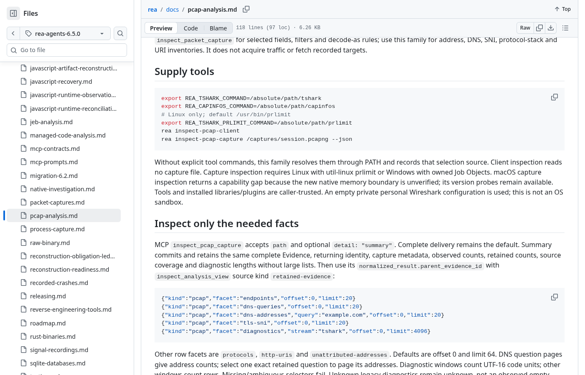
Now the exact fields, page 3 of the TCP packets (--match_offset 6 --match_limit 3), and the raw payload of my UDP "ping":
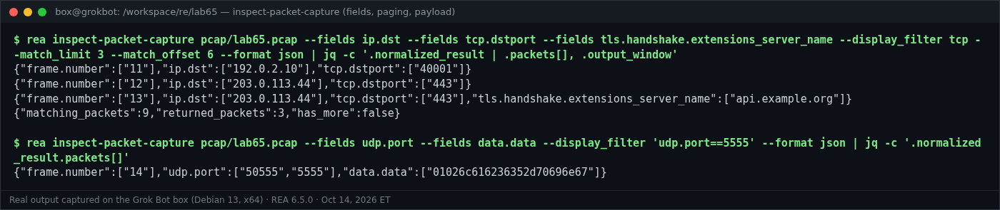
$ rea inspect-packet-capture pcap/lab65.pcap --fields ip.dst --fields tcp.dstport --fields tls.handshake.extensions_server_name --display_filter tcp --match_limit 3 --match_offset 6 --format json | jq -c '.normalized_result | .packets[], .output_window'
{"frame.number":["11"],"ip.dst":["192.0.2.10"],"tcp.dstport":["40001"]}
{"frame.number":["12"],"ip.dst":["203.0.113.44"],"tcp.dstport":["443"]}
{"frame.number":["13"],"ip.dst":["203.0.113.44"],"tcp.dstport":["443"],"tls.handshake.extensions_server_name":["api.example.org"]}
{"matching_packets":9,"returned_packets":3,"has_more":false}
$ rea inspect-packet-capture pcap/lab65.pcap --fields udp.port --fields data.data --display_filter 'udp.port==5555' --format json | jq -c '.normalized_result.packets[]'
{"frame.number":["14"],"udp.port":["50555","5555"],"data.data":["01026c616236352d70696e67"]}
01026c616236352d70696e67 is \x01\x02lab65-ping, exactly what I sent. Recorded upstream coverage is Wireshark 4.6.6; I used Debian's 4.4.19, and it worked.
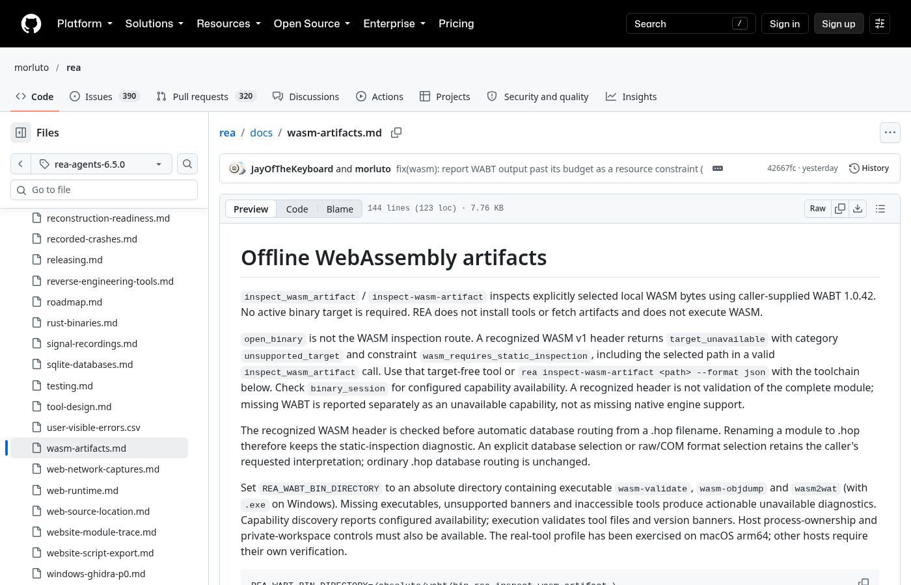
inspect-wasm-artifact uses your own WABT 1.0.42 to validate and list imports and exports, and it can scan loader "glue" JS for references to the module. It never runs the module and never fetches anything:
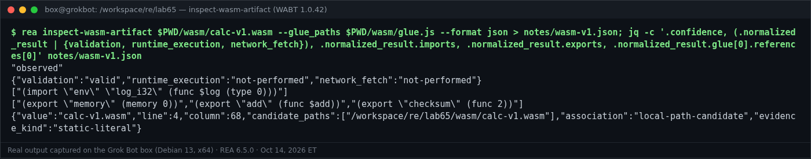
$ rea inspect-wasm-artifact $PWD/wasm/calc-v1.wasm --glue_paths $PWD/wasm/glue.js --format json > notes/wasm-v1.json; jq -c '.confidence, (.normalized_result | {validation, runtime_execution, network_fetch}), .normalized_result.imports, .normalized_result.exports, .normalized_result.glue[0].references[0]' notes/wasm-v1.json
"observed"
{"validation":"valid","runtime_execution":"not-performed","network_fetch":"not-performed"}
["(import \"env\" \"log_i32\" (func $log (type 0)))"]
["(export \"memory\" (memory 0))","(export \"add\" (func $add))","(export \"checksum\" (func 2))"]
{"value":"calc-v1.wasm","line":4,"column":68,"candidate_paths":["/workspace/re/lab65/wasm/calc-v1.wasm"],"association":"local-path-candidate","evidence_kind":"static-literal"}
It found the fetch("calc-v1.wasm") literal in my glue file at line 4, column 68, and labeled it a local-path-candidate (a static literal, not proof of what loads at runtime).
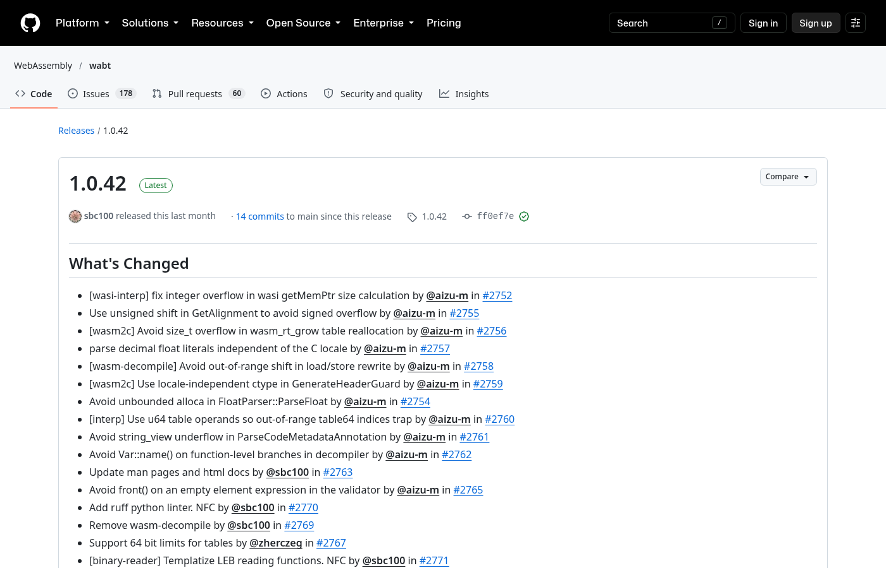
compare-wasm-interfaces diffs two inspection Evidence records (no WABT needed at compare time). It caught exactly my two additions:
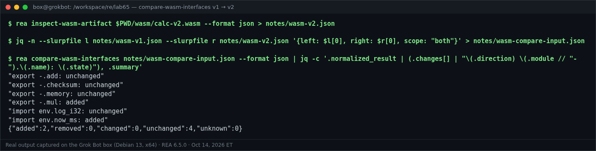
$ rea inspect-wasm-artifact $PWD/wasm/calc-v2.wasm --format json > notes/wasm-v2.json
$ jq -n --slurpfile l notes/wasm-v1.json --slurpfile r notes/wasm-v2.json '{left: $l[0], right: $r[0], scope: "both"}' > notes/wasm-compare-input.json
$ rea compare-wasm-interfaces notes/wasm-compare-input.json --format json | jq -c '.normalized_result | (.changes[] | "\(.direction) \(.module // "-").\(.name): \(.state)"), .summary'
"export -.add: unchanged"
"export -.checksum: unchanged"
"export -.memory: unchanged"
"export -.mul: added"
"import env.log_i32: unchanged"
"import env.now_ms: added"
{"added":2,"removed":0,"changed":0,"unchanged":4,"unknown":0}
Snag: the input wants the raw Evidence objects as left/right. The {kind:"inline", evidence} wrapper that inspect-analysis-view uses is rejected (§15).
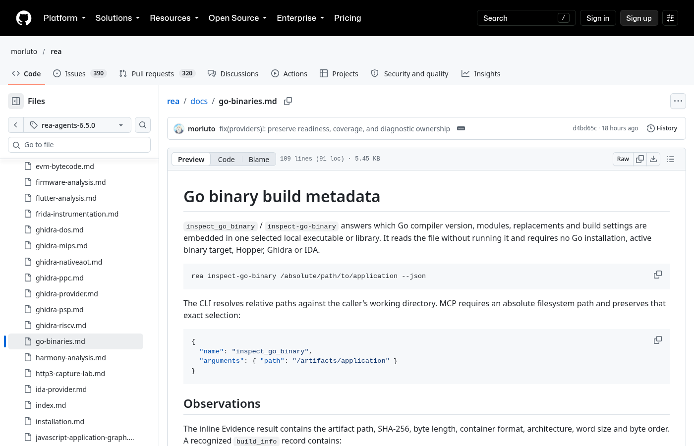
inspect-go-binary reads the embedded buildinfo from ELF, PE or thin Mach-O, without running the file (go-binaries.md):
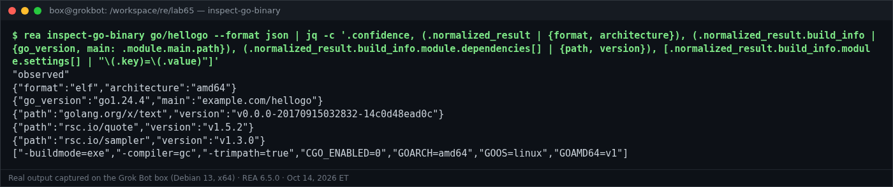
$ rea inspect-go-binary go/hellogo --format json | jq -c '.confidence, (.normalized_result | {format, architecture}), (.normalized_result.build_info | {go_version, main: .module.main.path}), (.normalized_result.build_info.module.dependencies[] | {path, version}), [.normalized_result.build_info.module.settings[] | "\(.key)=\(.value)"]'
"observed"
{"format":"elf","architecture":"amd64"}
{"go_version":"go1.24.4","main":"example.com/hellogo"}
{"path":"golang.org/x/text","version":"v0.0.0-20170915032832-14c0d48ead0c"}
{"path":"rsc.io/quote","version":"v1.5.2"}
{"path":"rsc.io/sampler","version":"v1.3.0"}
["-buildmode=exe","-compiler=gc","-trimpath=true","CGO_ENABLED=0","GOARCH=amd64","GOOS=linux","GOAMD64=v1"]
That's the exact compiler, module graph and build flags (-trimpath=true, CGO_ENABLED=0), all observed. This is the fastest supply-chain question you can ask of a Go binary.
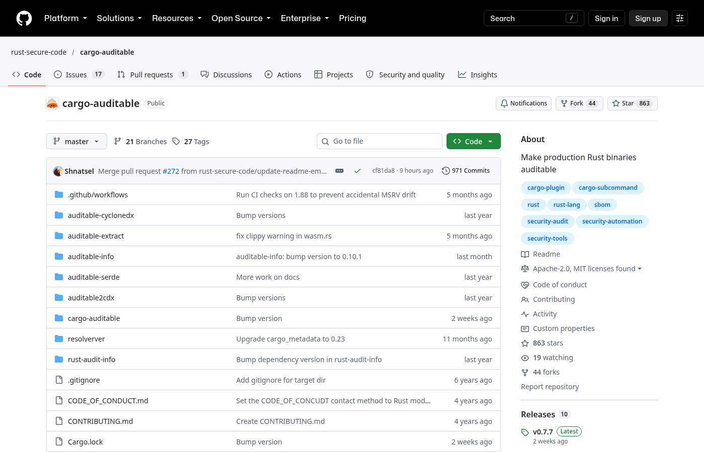
inspect-rust-binary reads the .dep-v0 section that cargo-auditable embeds (rust-binaries.md). I built the same crate twice:
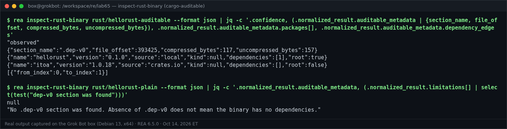
$ rea inspect-rust-binary rust/hellorust-auditable --format json | jq -c '.confidence, (.normalized_result.auditable_metadata | {section_name, file_offset, compressed_bytes, uncompressed_bytes}), .normalized_result.auditable_metadata.packages[], .normalized_result.auditable_metadata.dependency_edges'
"observed"
{"section_name":".dep-v0","file_offset":393425,"compressed_bytes":117,"uncompressed_bytes":157}
{"name":"hellorust","version":"0.1.0","source":"local","kind":null,"dependencies":[1],"root":true}
{"name":"itoa","version":"1.0.18","source":"crates.io","kind":null,"dependencies":[],"root":false}
[{"from_index":0,"to_index":1}]
$ rea inspect-rust-binary rust/hellorust-plain --format json | jq -c '.normalized_result.auditable_metadata, (.normalized_result.limitations[] | select(test("dep-v0 section was found")))'
null
"No .dep-v0 section was found. Absence of .dep-v0 does not mean the binary has no dependencies."
The plain build gets the right answer, which is "don't know": "Absence of .dep-v0 does not mean the binary has no dependencies." (I used cargo-auditable 0.6.6. 0.7.7 needs rustc ≥ 1.86.)
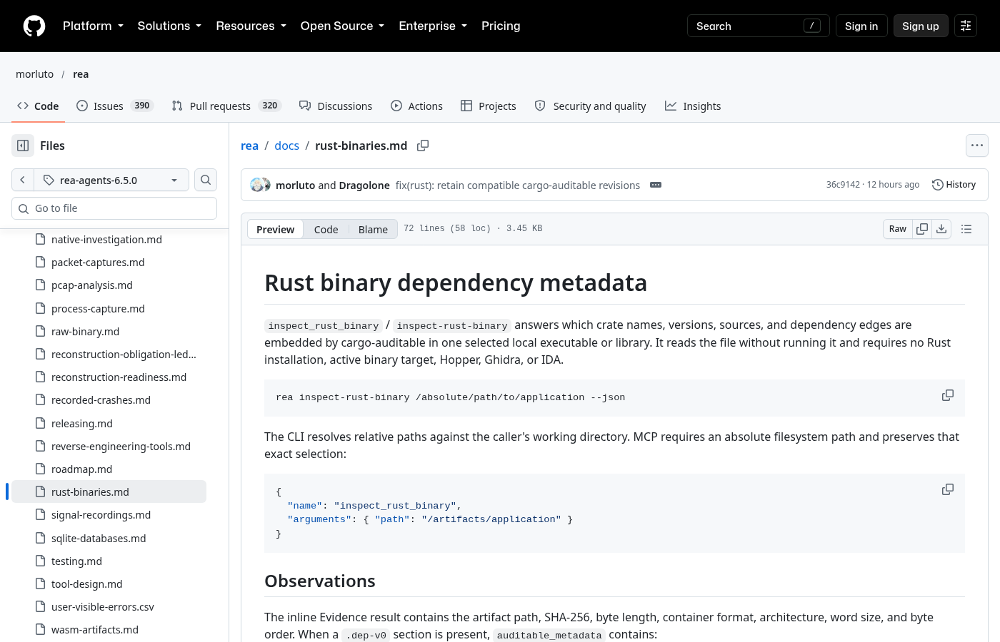
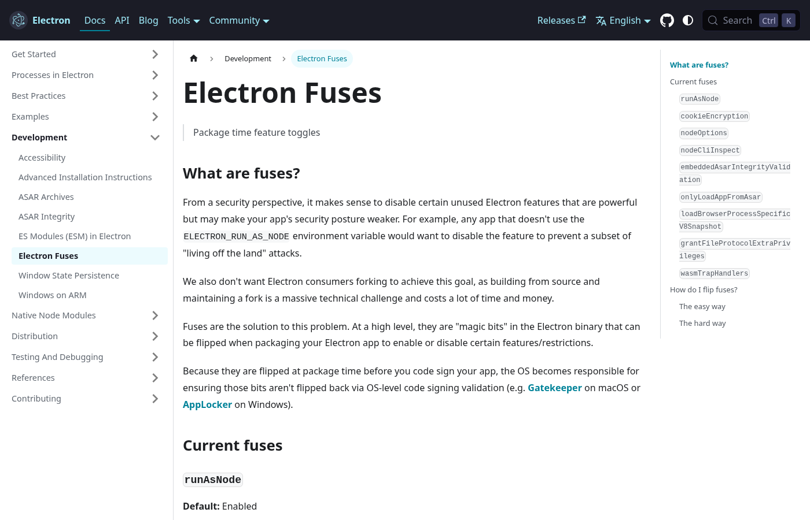
Electron fuses are build-time switches like RunAsNode and EnableNodeCliInspectArguments. inspect-electron-fuses reads the fuse wire bytes without launching the app, then states what each one implies at runtime (electron-fuses.md). I took Electron 44.7.2 and made a hardened copy with @electron/fuses:
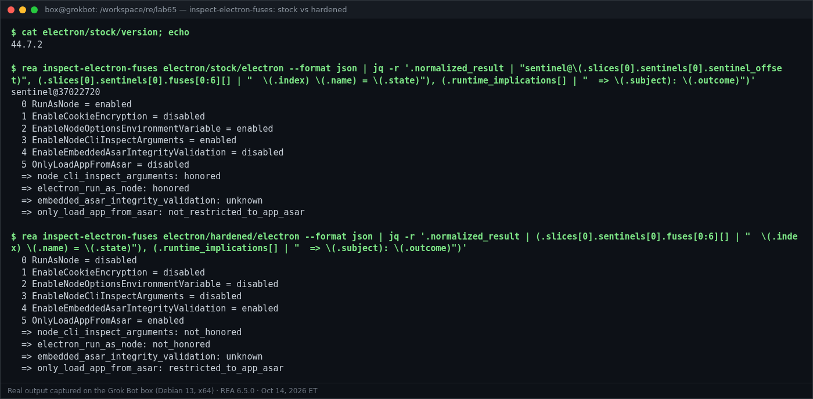
$ cat electron/stock/version; echo
44.7.2
$ rea inspect-electron-fuses electron/stock/electron --format json | jq -r '.normalized_result | "sentinel@\(.slices[0].sentinels[0].sentinel_offset)", (.slices[0].sentinels[0].fuses[0:6][] | " \(.index) \(.name) = \(.state)"), (.runtime_implications[] | " => \(.subject): \(.outcome)")'
sentinel@37022720
0 RunAsNode = enabled
1 EnableCookieEncryption = disabled
2 EnableNodeOptionsEnvironmentVariable = enabled
3 EnableNodeCliInspectArguments = enabled
4 EnableEmbeddedAsarIntegrityValidation = disabled
5 OnlyLoadAppFromAsar = disabled
=> node_cli_inspect_arguments: honored
=> electron_run_as_node: honored
=> embedded_asar_integrity_validation: unknown
=> only_load_app_from_asar: not_restricted_to_app_asar
$ rea inspect-electron-fuses electron/hardened/electron --format json | jq -r '.normalized_result | (.slices[0].sentinels[0].fuses[0:6][] | " \(.index) \(.name) = \(.state)"), (.runtime_implications[] | " => \(.subject): \(.outcome)")'
0 RunAsNode = disabled
1 EnableCookieEncryption = disabled
2 EnableNodeOptionsEnvironmentVariable = disabled
3 EnableNodeCliInspectArguments = disabled
4 EnableEmbeddedAsarIntegrityValidation = enabled
5 OnlyLoadAppFromAsar = enabled
=> node_cli_inspect_arguments: not_honored
=> electron_run_as_node: not_honored
=> embedded_asar_integrity_validation: unknown
=> only_load_app_from_asar: restricted_to_app_asar
The stock binary honors ELECTRON_RUN_AS_NODE and --inspect. The hardened one doesn't, and it only loads app.asar. ASAR integrity validation stays unknown on Linux even when the fuse is on, because REA won't claim what the platform doesn't enforce. As the changelog puts it, fuse observations "do not prove other Inspector-enablement paths."
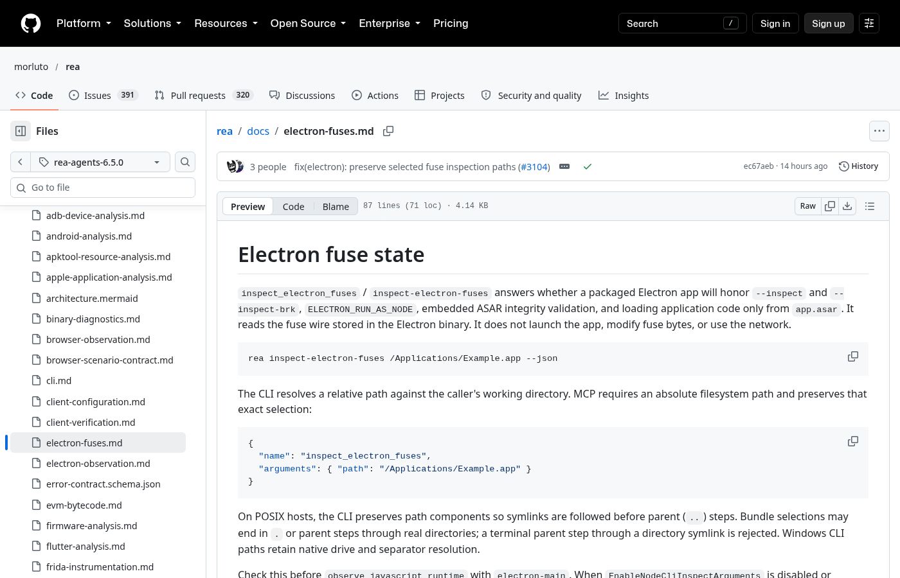

Yesterday I left §10.3 (Android), §10.5 (firmware) and §10.7 (.NET) as docs-only. Today I installed the engines and ran them. Everything is also saved as a standalone addendum (addendum-android-firmware-dotnet.md).

$ sha256sum ~/.local/android/jadx-headless-mcp-0.7.1-all.jar ~/.local/android/ApiDemos-debug.apk
6e5eacf500b64292bfb73c49797c1958f6ee44646e43e868039ae7feb573ff75 /home/box/.local/android/jadx-headless-mcp-0.7.1-all.jar
a9eecf37b26cd084855c530db81c2bb1b91f4c1b095a04f47aa7c20e2791f686 /home/box/.local/android/ApiDemos-debug.apk
$ $REA_ADB_PATH version | head -2; $REA_APKTOOL_COMMAND --version; binwalk --version 2>&1 | head -1; unblob --version; sasquatch -version 2>&1 | head -1; dotnet --version
Android Debug Bridge version 1.0.41
Version 37.0.1-15733141
3.0.3
binwalk 3.1.0
26.6.4
unsquashfs version 4.5.1 (2022/03/17)
8.0.426

$ rea inspect-android-package $PWD/android/ApiDemos-debug.apk --format json | jq -c '.confidence, (.normalized_result | {package_name, version_name, min_sdk, target_sdk, class_count, resource_count, signature_verification}), .normalized_result.permissions[0:6], (.normalized_result.engine | {name, version})'
"observed"
{"package_name":"io.appium.android.apis","version_name":"6.0.18","min_sdk":"26","target_sdk":"33","class_count":2876,"resource_count":869,"signature_verification":"not_performed"}
["android.permission.READ_CONTACTS","android.permission.WRITE_CONTACTS","android.permission.VIBRATE","android.permission.ACCESS_COARSE_LOCATION","android.permission.INTERNET","android.permission.SET_WALLPAPER"]
{"name":"jadx-headless-mcp","version":"0.7.1"}
$ rea search-android-classes $PWD/android/ApiDemos-debug.apk ApiDemos --format json | jq -c '.normalized_result | {total_classes, matches, coverage}'
{"total_classes":2876,"matches":["io.appium.android.apis.ApiDemos","io.appium.android.apis.ApiDemosApplication"],"coverage":"complete"}

$ rea inspect-android-method $PWD/android/ApiDemos-debug.apk io.appium.android.apis.ApiDemos onCreate --format json | jq -r '.normalized_result | "\(.method.reported_signature) [\(.representation), body \(.body_status)]", .source.text'
onCreate(android.os.Bundle): void [java, body available]
@Override // android.app.Activity
public void onCreate(Bundle savedInstanceState) {
super.onCreate(savedInstanceState);
Intent intent = getIntent();
String path = intent.getStringExtra("io.appium.android.apis.Path");
if (path == null) {
path = "";
}
setListAdapter(new SimpleAdapterWithDesc(this, getData(path), android.R.layout.simple_list_item_1, new String[]{"title", "contentDescription"}, new int[]{android.R.id.text1, android.R.id.text2}));
getListView().setTextFilterEnabled(true);
}
$ rea decode-android-resources $PWD/android/ApiDemos-debug.apk --no-strings --format json | jq -c '.normalized_result | .client, .metadata, {decoded_file_count, coverage}'
{"command":"/home/box/.local/apktool/apktool","command_source":"environment","apktool_version":"3.0.3"}
{"version_name":"6.0.18","version_code":"44","min_sdk_version":"26","target_sdk_version":"33","package_name":"io.appium.android.apis"}
{"decoded_file_count":983,"coverage":"complete"}
$ rea list-adb-devices --format json | jq -c '.normalized_result // {code, message}'
{"client":{"binary_path":"/home/box/.local/android/platform-tools/adb","path_source":"environment","version":"37.0.1-15733141","installed_path":"/home/box/.local/android/platform-tools/adb"},"devices":[],"may_have_started_adb_server":true}
signature_verification: "not_performed" is stated, not hidden. list-adb-devices honestly reports may_have_started_adb_server: true. It did, so I ran adb kill-server afterwards. I didn't touch the device-changing tools (install, push, start) because there's no device.


$ ls -la firmware/lab65-fw.bin
-r--r--r-- 1 box box 188416 Oct 14 15:01 firmware/lab65-fw.bin
$ rea inspect-firmware-regions $PWD/firmware/lab65-fw.bin --format json | jq -c '.provider, (.normalized_result.regions[] | {offset, reported_size, signature})'
{"id":"binwalk","name":"Binwalk","version":"3.1.0"}
{"offset":512,"reported_size":179527,"signature":"squashfs"}
{"offset":184320,"reported_size":152,"signature":"gzip"}
$ rea extract-firmware $PWD/firmware/lab65-fw.bin $PWD/notes/fw-x --format json | jq -c '.provider, (.normalized_result | {coverage, gaps: [.extraction_gaps[] | {kind, range}]})'
{"id":"unblob","name":"Unblob","version":"26.6.4"}
{"coverage":"partial","gaps":[{"kind":"unknown-chunk-handler","range":{"offset":0,"length":512}}]}
$ cd notes/fw-x && find . -type f | sort && cat firmware.bin_extract/512-180736.squashfs_v4_le_extract/etc/device.conf
./firmware.bin_extract/0-512.unknown
./firmware.bin_extract/180736-184320.padding
./firmware.bin_extract/184320-184472.gzip_extract/gzip.uncompressed
./firmware.bin_extract/184320-184472.gzip_extract/gzip.uncompressed_extract/wifi.conf
./firmware.bin_extract/184472-188416.padding
./firmware.bin_extract/512-180736.squashfs_v4_le_extract/bin/hellod
./firmware.bin_extract/512-180736.squashfs_v4_le_extract/etc/device.conf
./firmware.bin_extract/512-180736.squashfs_v4_le_extract/www/index.html
hostname=lab65-router
admin_ui=enabled
fw_version=6.5.0-lab
Coverage is partial, and the only gap is my own 512-byte custom header, which no handler knows. That's correct. The first time, the gap was missing-extractor-dependency: sasquatch and the squashfs stayed packed (§15). Then the extracted daemon goes straight into the native flow:

$ rea search notes/fw-x/firmware.bin_extract/512-180736.squashfs_v4_le_extract/bin/hellod hello-rust --provider ghidra --format json | jq -c '.subject.format, .subject.architecture, (.normalized_result | if type=="array" then .[0:2] else (.matches // .)[0:2] end), .confidence'
"elf"
"x86_64"
[{"address":"0x14c000","value":"hello-rust \n"}]
"observed"

My assembly is a harmless promo-code format checker with one P/Invoke:
public static bool IsWellFormed(string code) => code.Length == 8 && code.StartsWith("LAB-") && Checksum(code) % 7 == 3;
[DllImport("libc", EntryPoint = "getpid")] public static extern int GetPid();

$ rea inspect-managed-artifact dotnet/target/PromoLab.dll --format json | jq -c '(.normalized_result.classification | {status, runtime_family, implementation, managed_architecture}), (.normalized_result.assembly | {name, version}), .normalized_result.metadata.table_row_counts'
{"status":"managed","runtime_family":"modern-dotnet","implementation":"cil","managed_architecture":"anycpu"}
{"name":"PromoLab","version":"1.0.0.0"}
{"Module":1,"TypeRef":19,"TypeDef":4,"Field":1,"MethodDef":6,"Param":3,"MemberRef":23,"Constant":1,"CustomAttribute":14,"StandAloneSig":2,"ModuleRef":1,"ImplMap":1,"Assembly":1,"AssemblyRef":2,"MethodSpec":1}
$ rea inspect-managed-members dotnet/target/PromoLab.dll --type PromoLab.PromoCode --format json | jq -c '(.normalized_result.methods[] | {name, sig: "\(.signature.return_type) (\(.signature.parameter_types|join(", ")))", il_bytes: .body.il_size}), .normalized_result.user_strings.literals, (.normalized_result.call_edges[] | "\(.caller) -> \(.target_declaring_type).\(.target_name)")'
{"name":"IsWellFormed","sig":"bool (string)","il_bytes":36}
{"name":"Checksum","sig":"i4 (string)","il_bytes":43}
{"name":"Describe","sig":"string ()","il_bytes":6}
{"name":".ctor","sig":"void ()","il_bytes":7}
[{"token":"0x70000001","offset":2381,"value":"LAB-"},{"token":"0x7000000b","offset":2391,"value":"PromoLab code formatter v1"}]
"PromoLab.PromoCode.IsWellFormed -> System.String.get_Length"
"PromoLab.PromoCode.IsWellFormed -> System.String.StartsWith"
"PromoLab.PromoCode.IsWellFormed -> PromoLab.PromoCode.Checksum"
"PromoLab.PromoCode.Checksum -> System.String.get_Chars"
"PromoLab.PromoCode.Checksum -> System.String.get_Length"
"PromoLab.PromoCode.Checksum -> System.Math.Abs"
"PromoLab.PromoCode..ctor -> System.Object..ctor"
$ rea inspect-managed-native-boundaries dotnet/target/PromoLab.dll --format json | jq -c '.normalized_result.pinvoke_imports[] | {member_name, import_scope_name, import_name}'
{"member_name":"GetPid","import_scope_name":"libc","import_name":"getpid"}
New in 6.5 and visible here: decoded ldstr literals ("LAB-", the banner) and a declaring type on every call target. The P/Invoke boundary GetPid → libc!getpid is found without loading the assembly.
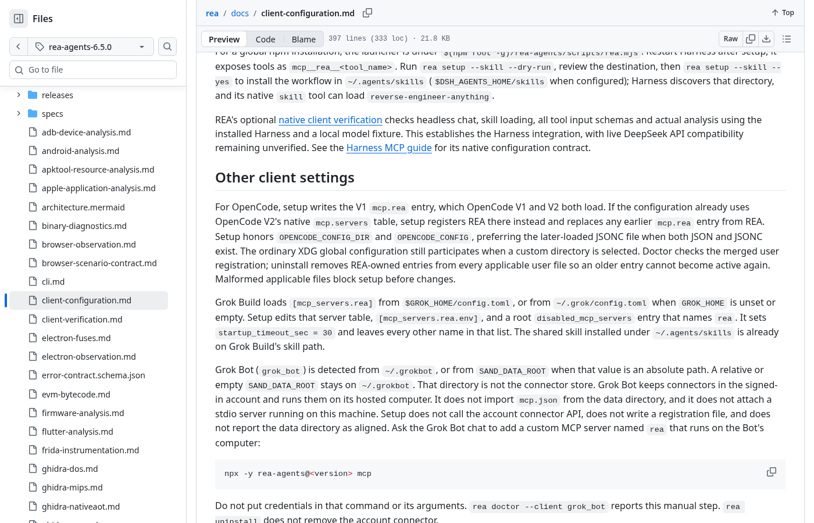
After installing everything, here's the unscoped doctor:

$ rea doctor --json | jq -r '"healthy: \(.healthy)", (.checks[] | " \(if .ok then "PASS" else "FAIL" end) \(.classification) \(.name)")'
healthy: false
PASS healthy node
PASS healthy host
FAIL missing_analysis_engine hopper
PASS healthy ghidra
PASS healthy ghidra-platform
PASS healthy ghidra-architecture
PASS healthy ghidra-installation
PASS healthy ghidra-version
PASS healthy ghidra-headless
PASS healthy ghidra-native_decompiler
PASS healthy ghidra-java
FAIL missing_analysis_engine ida-registration
PASS healthy jadx
FAIL config_drift skill:identity
FAIL config_drift registration:cursor
$ rea inspect-apktool-client --format json | jq -c '.normalized_result.client // .normalized_result'
{"command":"/home/box/.local/apktool/apktool","command_source":"environment","apktool_version":"3.0.3"}
$ rea inspect-adb-client --format json | jq -c '.normalized_result | {version: (.client.version // .version)}'
{"version":"37.0.1-15733141"}
$ rea inspect-pcap-client --format json | jq -c '.normalized_result.client | {tshark_version, capinfos_version}'
{"tshark_version":"TShark (Wireshark) 4.4.19.","capinfos_version":"Capinfos (Wireshark) 4.4.19."}
host passes on Debian 13 today; yesterday's 6.4.0 doctor called it unsupported.hopper and ida-registration (engines I don't have; Hopper is macOS), skill:identity and registration:cursor (config drift: doctor suggests rea setup, which I didn't run because it edits client configs).inspect-*-client command, or just run the route.My Grok Bot rea connector restarted onto 6.5.0. The proof is that the connector and the CLI produce the same content-addressed Evidence ID for the same file:
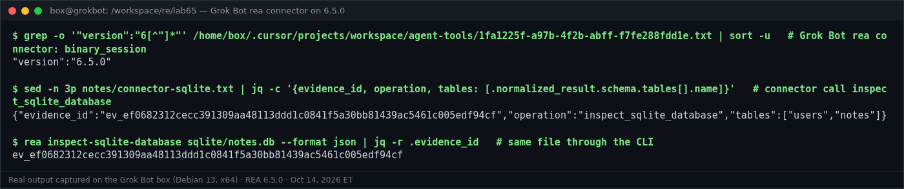
$ grep -o '"version":"6[^"]*"' /home/box/.cursor/projects/workspace/agent-tools/1fa1225f-a97b-4f2b-abff-f7fe288fdd1e.txt | sort -u # Grok Bot rea connector: binary_session
"version":"6.5.0"
$ sed -n 3p notes/connector-sqlite.txt | jq -c '{evidence_id, operation, tables: [.normalized_result.schema.tables[].name]}' # connector call inspect_sqlite_database
{"evidence_id":"ev_ef0682312cecc391309aa48113ddd1c0841f5a30bb81439ac5461c005edf94cf","operation":"inspect_sqlite_database","tables":["users","notes"]}
$ rea inspect-sqlite-database sqlite/notes.db --format json | jq -r .evidence_id # same file through the CLI
ev_ef0682312cecc391309aa48113ddd1c0841f5a30bb81439ac5461c005edf94cf
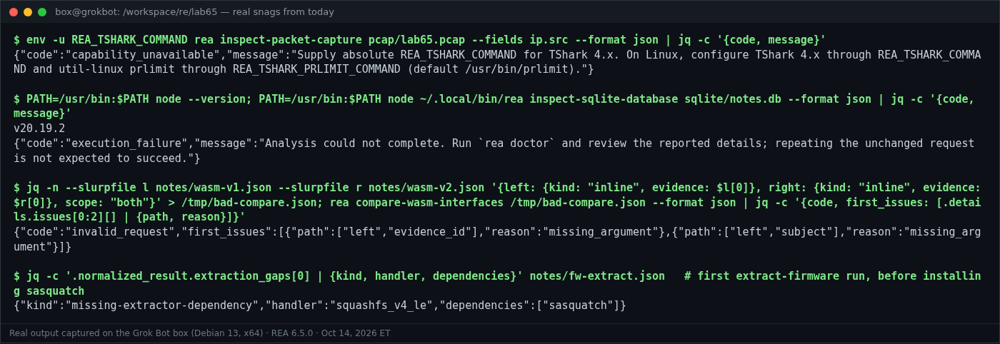
$ env -u REA_TSHARK_COMMAND rea inspect-packet-capture pcap/lab65.pcap --fields ip.src --format json | jq -c '{code, message}'
{"code":"capability_unavailable","message":"Supply absolute REA_TSHARK_COMMAND for TShark 4.x. On Linux, configure TShark 4.x through REA_TSHARK_COMMAND and util-linux prlimit through REA_TSHARK_PRLIMIT_COMMAND (default /usr/bin/prlimit)."}
$ PATH=/usr/bin:$PATH node --version; PATH=/usr/bin:$PATH node ~/.local/bin/rea inspect-sqlite-database sqlite/notes.db --format json | jq -c '{code, message}'
v20.19.2
{"code":"execution_failure","message":"Analysis could not complete. Run `rea doctor` and review the reported details; repeating the unchanged request is not expected to succeed."}
$ jq -n --slurpfile l notes/wasm-v1.json --slurpfile r notes/wasm-v2.json '{left: {kind: "inline", evidence: $l[0]}, right: {kind: "inline", evidence: $r[0]}, scope: "both"}' > /tmp/bad-compare.json; rea compare-wasm-interfaces /tmp/bad-compare.json --format json | jq -c '{code, first_issues: [.details.issues[0:2][] | {path, reason}]}'
{"code":"invalid_request","first_issues":[{"path":["left","evidence_id"],"reason":"missing_argument"},{"path":["left","subject"],"reason":"missing_argument"}]}
$ jq -c '.normalized_result.extraction_gaps[0] | {kind, handler, dependencies}' notes/fw-extract.json # first extract-firmware run, before installing sasquatch
{"kind":"missing-extractor-dependency","handler":"squashfs_v4_le","dependencies":["sasquatch"]}
| Symptom | Fix |
|---|---|
capability_unavailable: Supply absolute REA_TSHARK_COMMAND |
export REA_TSHARK_COMMAND=/usr/bin/tshark. inspect-pcap-capture finds tshark on PATH; inspect-packet-capture insists on an absolute path |
SQLite → vague execution_failure |
You're on Node 20 (or Node 22 / early 24). Use Node 24 ≥ 24.15 or 26+ |
compare-wasm-interfaces → missing_argument left.evidence_id |
Pass the raw Evidence JSON as left/right, not {kind:"inline",evidence} |
Unblob gap missing-extractor-dependency: sasquatch |
Install onekey-sec/sasquatch (I used v4.5.1-6). Also libmagic1, lz4, zstd, p7zip-full, e2fsprogs |
apt can't find tshark |
sudo apt-get update first |
| Binwalk 3.1.0 has no Linux release binary | cargo install binwalk --version 3.1.0 --locked |
cargo install cargo-auditable fails on older Rust |
cargo install cargo-auditable --version 0.6.6 (0.7.7 needs rustc 1.86) |
| Agent connector still advertises 6.4.0 tools | Restart or reconnect it, or pin it to npx -y rea-agents@6.5.0 mcp |
npm warns about frida install scripts |
Harmless unless you use the Frida tools; allow them explicitly if you do |
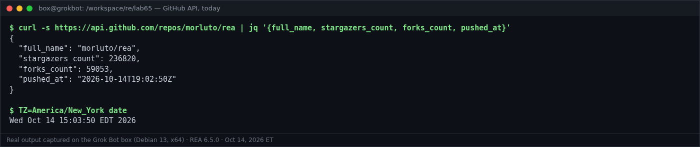
$ curl -s https://api.github.com/repos/morluto/rea | jq '{full_name, stargazers_count, forks_count, pushed_at}'
{
"full_name": "morluto/rea",
"stargazers_count": 236820,
"forks_count": 59053,
"pushed_at": "2026-10-14T19:02:50Z"
}
$ TZ=America/New_York date
Wed Oct 14 15:03:50 EDT 2026
| Claim going around today | Receipt |
|---|---|
| "Pick the JS files you want… trace how pieces connect across bundles" (@ttejas) | Confirmed. §4–5: 2 of 4 files parsed, cross-chunk edges and bindings resolved, unselected files marked unknown |
| "893 commits, 529 merged PRs" (@DavidCabezaAI) | Matches the release notes' own contribution record. For scale: git rev-list between the two tags in my clone counts 266 commits on the tag line |
| "334 MB Obsidian analysis → ~10 KB summary" (@Alexcyzhou) | That's the docs' example, not something I reproduced. My own receipt: 266,827 → 9,827 bytes on a small app (§6) |
| "6.5 is noticeably faster" (@qwerty__cs) | Not measured. I didn't benchmark 6.4 vs 6.5 |
| "REA + Opus 5.5 finds exactly why any app is slow, down to the line" (@0xMitto) | Not a documented REA route. REA reads code and recorded evidence; it isn't a profiler. Treat line-level "why it's slow" claims as the model's inference |
| Stars | GitHub API: 236,820 at 3:03 PM ET, Oct 14 (yesterday's capture: 204,859 at 6:28 PM ET) |
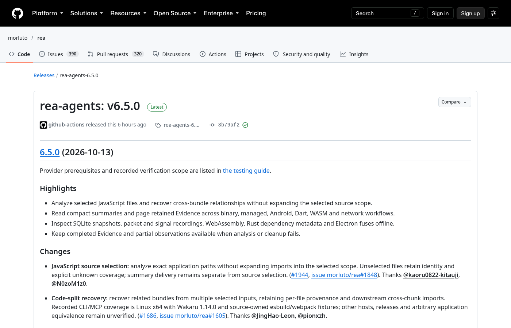
These are in 6.5.0's release notes, but I didn't run them, so take them as documented, not verified: sigrok signal-recording decode (Linux, sigrok-cli 0.7.2), QUIC qlog (aioquic 1.5.0), Fiddler SAZ, HarmonyOS HAP/HSP, Flutter APK AOT, Frida instrumentation, attached native IDA MCP, new Ghidra profiles (MIPS, RISC-V, PowerPC, PSP, raw 6502), Ghidra byte search, AArch64 recorded crashes, HAR API-surface derivation, and the ADB device-changing tools. Nothing here was run on Windows or macOS. Two recorded-coverage notes: upstream tested pcap with Wireshark 4.6.6 (I used 4.4.19), and WASM's real-tool lane is macOS arm64 (I ran it on Linux x64).
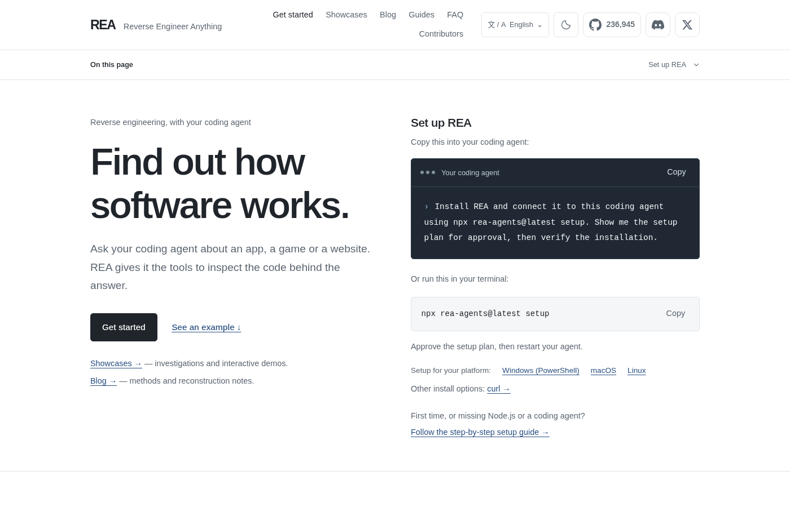
Analyze only what you own or are authorized to analyze. Every target above is my own build or an Apache-2.0 sample.